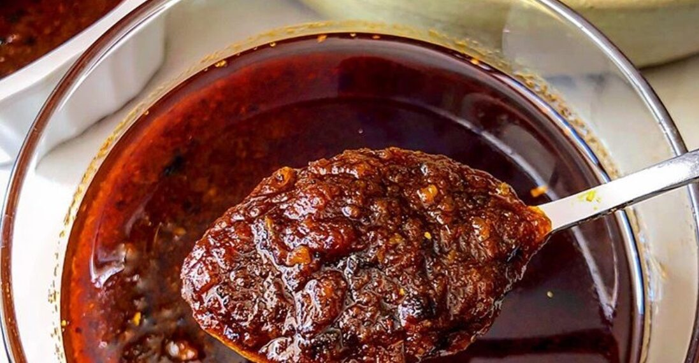

Shito

Description
Shito is a very hot sauce that is popular in Ghana.
Ingredients
- 2 cups rapeseed oil (or peanut oil)
- 3 red onions , cut into small cubes
- 4 cloves garlic , very finely chopped
- 3 inch fresh ginger , peeled and finely grated
- 1 tablespoon crushed thyme leaves
- 4 oz. green kpakpo shito peppers (green Scotch bonnet peppers)
- 6 tablespoons tomato purée
- 5 oz. chilli powder
- 2 oz. ground dried shrimp
- 2 oz. smoked fish powder
- 1 teaspoon black pepper , freshly ground
- 1 teaspoon salt
Steps
- Heat a heavy-bottomed saucepan, then add the oil and fry the onions over medium heat for 2 to 3 minutes until they become translucent
- Add garlic, ginger, thyme and green kpakpo shito peppers. Mix well and fry for a few minutes, stirring frequently.
- Stir in the tomato purée and mix well.
- Pour in the chili powder and continue cooking, stirring constantly for 30 minutes.
- Finally, add the dried shrimp and smoked fish powder, then cook over low heat for 20 minutes, stirring almost continuously to prevent the mixture from sticking to the pan
- The content should change from dark red to very dark brown and the oil will rise to the surface when the sauce is ready.
- Taste and adjust the seasoning if necessary.
- Cool, then spoon into sterilized glass jars.
- Seal the jars and keep them in the refrigerator for up to a month.